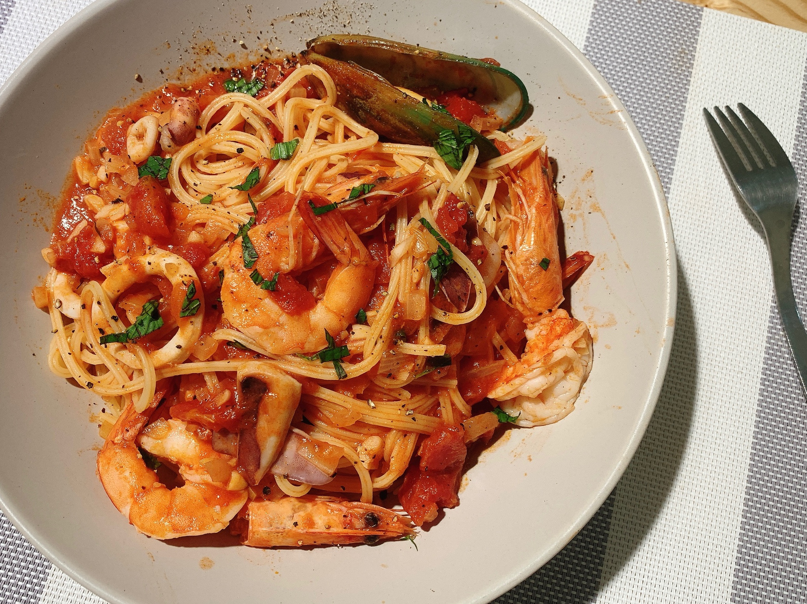

1. 鮭魚、花枝片薄切塊；蝦仁去腸泥後剖半，備用。去皮番茄擰碎、九層塔切末、巴西里切末、紅辣椒切丁，備用
2. 起滾水鍋，加少許鹽和橄欖油，放入義大利麵條煮約8分鐘。
3. 另起鍋倒入橄欖油，爆香洋蔥末和蒜末，加入蛤蜊、海鮮高湯、紅酒、作法2番茄碎、番茄醬煨煮。
4. 待作法3鍋中蛤蜊殼打開，鮮汁流入鍋中，先將蛤蜊取出，備用。再加入作法1花枝片、鮭魚片、蝦仁、作法2義大利麵、作法2九層塔末、巴西里末拌煮。
5. 續入少許細砂糖、黑胡椒粒、紅辣椒丁調味，再將作法3取出的蛤蜊放入鍋中快速拌炒一下，起鍋前加入九層塔末和鮮奶油拌勻，撒上帕瑪森起司粉即可。

首頁綜合美介紹 青醬蛤蠣義大利麵 奶油培根義大利麵 煙花女義大利麵 學習心得
練習音樂與視頻